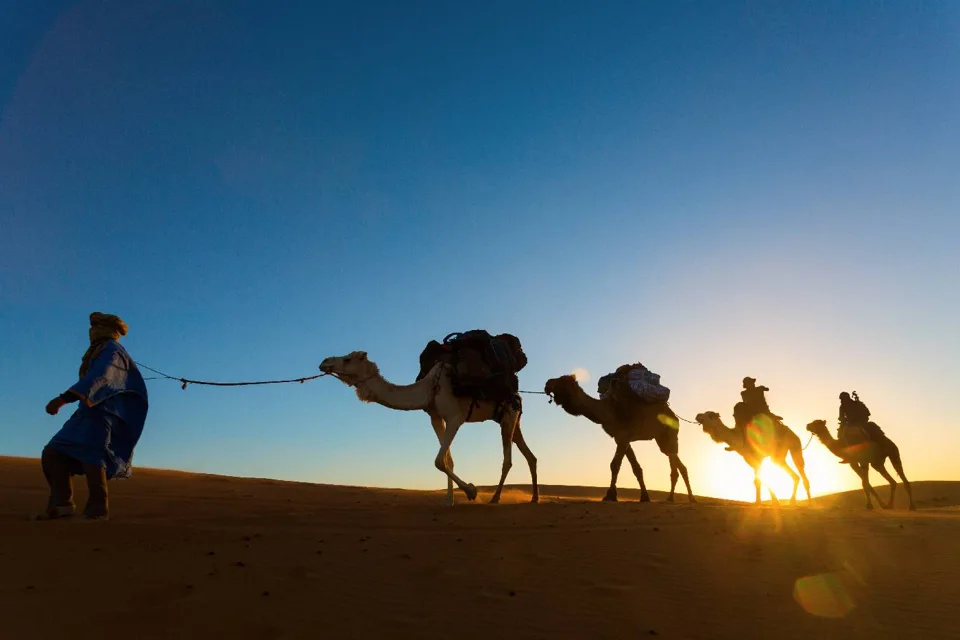

Voyage dans le désert · MOROCCO EXPLORER TOURS
Votre premier voyage au Sahara : de la route jusqu’aux dunes
L’expérience du désert commence bien avant d’arriver dans le sable. La route par les cols de montagne, le pays des kasbahs et les vallées-oasis fait partie du voyage. Savoir comment se déroulent le trajet et la nuit au bivouac vous permet d’arriver avec des attentes réalistes.

Choisissez votre désert en pensant à tout le trajet
Merzouga est le village d’accès aux dunes de l’Erg Chebbi, dans l’est du Maroc. M’Hamid ouvre sur une autre région désertique : pour rejoindre l’Erg Chigaga, il faut généralement un transfert en tout-terrain. Ce sont deux itinéraires différents, pas deux noms pour la même nuit au désert.
Choisissez selon le nombre de jours dont vous disposez, votre ville de départ et votre tolérance à la route. Si Merzouga est votre objectif principal depuis Marrakech, prévoyez des nuits d’étape en chemin. Demandez le programme complet, retour ou suite du voyage compris, avant de comparer les offres.
Comprendre l’arrivée et le transfert au bivouac
Vous laisserez peut-être votre véhicule principal ou vos grosses valises à un point de rendez-vous avant de rejoindre le bivouac. Le dernier trajet peut se faire à dos de dromadaire ou en véhicule, selon le campement et ce qui a été convenu. Confirmez l’horaire et les alternatives à l’avance, surtout si vous préférez ne pas monter.
Le coucher du soleil est un moment très apprécié près des dunes, mais l’heure d’arrivée dépend de la route et des conditions. Ne considérez pas la photo au coucher du soleil comme un rendez-vous garanti. Un trajet confortable laisse au chauffeur le temps de gérer les arrêts et d’arriver au point de transfert sans se presser.
Ce que comprend vraiment une nuit au bivouac
Les campements sont très différents les uns des autres. Demandez si votre tente est privée, si la salle de bain est partagée ou privative, comment fonctionne l’électricité et quelle literie est fournie. Si un élément de confort compte pour vous, demandez une confirmation au lieu de vous fier à une étiquette comme « luxe ».
Le séjour comprend souvent le dîner et le petit-déjeuner, mais vérifiez votre proposition. La soirée peut être animée par de la musique ; ne partez pas du principe que c’est le cas dans chaque campement ou chaque soir. Le vent, les nuages et la lune changent aussi l’expérience : un ciel parfaitement étoilé n’est jamais garanti.
Préparez vos affaires pour le transfert et la nuit
Gardez un petit sac pour la nuit à portée de main. Pensez à une couche chaude, un chapeau, de la crème solaire, des lunettes de soleil, une gourde, une lampe de poche et des chaussures fermées pour marcher sur un sol inégal. Le sable s’infiltre vite dans les sacs ouverts : protégez votre téléphone et votre appareil photo quand vous ne les utilisez pas.
Les températures peuvent changer brusquement entre le jour et la nuit. Consultez la météo peu avant le départ et demandez à votre hôte quelles sont les conditions au campement. Emportez avec vous ce dont vous avez besoin pour la nuit : les grosses valises peuvent rester ailleurs pendant le transfert.
Gardez du temps pour une matinée tranquille
Si votre programme le permet, levez-vous tôt pour une petite marche ou simplement pour regarder la lumière changer. Suivez les conseils de l’équipe du campement sur les endroits où aller, et organisez toute sortie plus longue avec un guide. Avant de partir, renseignez-vous sur l’heure du petit-déjeuner, la récupération des bagages et votre prochaine étape.
La montagne, avant ou après le désert
Au départ de Marrakech, notre excursion des trois vallées vous fait découvrir plusieurs paysages du Haut Atlas en une journée.